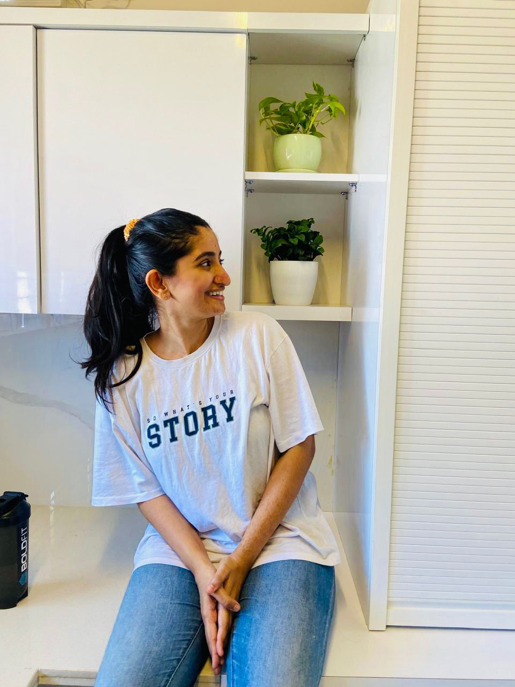
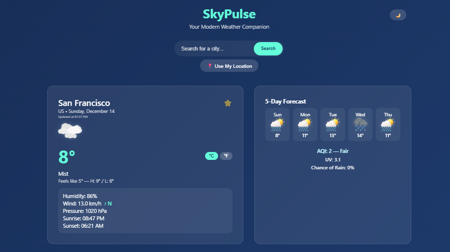

MERN Stack Developer
Hi, I’m Chaithra. I build full-stack web applications using the MERN stack (React, Node.js, MongoDB), focusing on clean architecture, performance, and real-world usability. I enjoy building real-world solutions — from designing scalable backend systems to creating seamless user experiences. Recently built PREP — a meal planning application with dynamic grocery list generation.
View Projects Download Resume
About Me

I’m a MERN Stack Developer who enjoys building real-world web applications that solve practical problems and deliver smooth user experiences.
My primary focus is developing full-stack applications using React, Node.js, Express, and MongoDB, with an emphasis on clean architecture and maintainable code.
I have built projects like PREP, a meal planning application with dynamic grocery list generation, along with API-based and UI-focused applications to strengthen my frontend and backend skills.
I enjoy working on both frontend and backend — from designing responsive interfaces to building scalable APIs and handling data efficiently.
I’m continuously learning and improving, aiming to build scalable, user-focused applications and grow as a full-stack developer.
My Skills
Languages
- HTML5
- CSS3
- JavaScript (ES6+)
- MongoDB / MongoDB Atlas
Frameworks & Libraries
- React.js (Hooks, Context API)
- Node.js / Express.js
- Tailwind CSS
- Bootstrap
Tools & Workflow
- Git / GitHub
- Node.js / npm
- Webpack / Vite
- Postman (API Testing)
- Deployment: Netlify / Vercel / Render
- REST API Development
- JWT Authentication
Featured Projects

PREP – Full Stack Meal Planner
A full-stack MERN meal planning platform that allows users to discover recipes, organize weekly meal plans, and automatically generate grocery lists for efficient meal preparation.

SkyPulse
A modern weather dashboard that fetches real-time weather data from external APIs and presents dynamic forecasts through a clean and responsive interface.

Apple Website Clone
A responsive Apple website clone replicating modern product page interactions including mega-menu navigation, animated product sections, and interactive carousels using pure HTML, CSS, and JavaScript.
Get In Touch
I'm actively seeking MERN Stack Developer opportunities and open to collaborating on meaningful projects. Feel free to reach out — I’d be happy to connect and discuss how I can contribute.